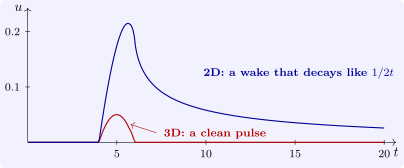

5.3 Huygens’ principle
Compare the two formulas. In three dimensions \(u(x, t)\) depends only on the data on the sphere \(|y - x| = ct\); in two dimensions it depends on the data in the whole disc \(|y - x| \leq ct\). So if the data vanish outside a ball of radius \(a\), then in three dimensions \(u(x, t) = 0\) except when \(|x| - a \leq ct \leq |x| + a\): the signal arrives, lasts for time \(2a/c\), and is gone. This is the sharp Huygens principle. In two dimensions, once the signal has arrived, every later disc contains the support of the data and \(u\) is never again identically zero there: the disturbance leaves a wake.
Example 5.3.1. Take \(f = 0\) and \(g = 1\) in the ball \(|y| < a\) (a sudden blow to a small region), and \(c = 1\). In three dimensions, at a point with \(|x| = R > a\), the fraction of the sphere of radius \(t\) about \(x\) inside the ball is \(\bigl (a^2 - (R - t)^2\bigr )/4Rt\) for \(|R - t| < a\), so \[ u(x, t) = \frac {a^2 - (R - t)^2}{4R} \quad (|R - t| < a), \qquad u = 0 \text { otherwise}: \] a single pulse of height \(a^2/4R\). In two dimensions, at the centre, Poisson’s formula gives \(u = t\) for \(t \leq a\) and \(u = t - \sqrt {t^2 - a^2}\) for \(t > a\), which decays only like \(a^2/2t\) (Figure 7).

The general result, due to Hadamard, is that the sharp principle holds for the wave equation in odd dimensions \(n \geq 3\) and fails in even dimensions and in \(n = 1\) (for the velocity data, as in Section 4). We live in a world where speech is intelligible because \(n = 3\).
Questions on this section
Stuck on something here? Ask below and it stays attached to this topic.